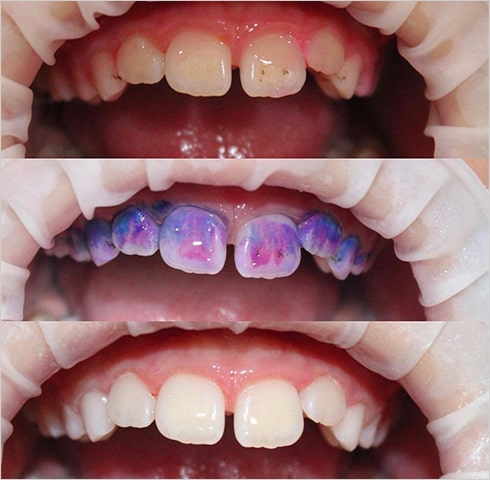

Мои работы

Профессиональная гигиена

Лечение кариеса
Профессиональная гигиена
Лечение кариеса
Диагностика состояния зубов включает:
Осмотр полости рта
Беседа с родителями и ребенком
Снимки необходимые для уточнения диагноза с помощью цифрового радиовизиографа
Составление плана лечения
Подбор индивидуальных средств гигиены
Рекомендации по плану питания
Лечение на плохо очищенных зубах с налётом имеет меньше шансов быть успешным и с хорошим прогнозом.
Зубы с плохой гигиеной чаще подвергаются атаке кариозных бактерий. Поэтому, профессиональную гигиену зубов детям проводит сам лечащий врач.
Процедура включает в себя чистку зубов специальными составами и особыми щёточками, а также зубной нитью.При необходимости проводится аппаратная гигиена зубов. После очищения, зубы полируются и покрываются фторсодержащим гелем для укрепления эмали.
Герметизация или «запечатывание» фиссур — специфический метод первичной профилактики кариеса зубов.
Фиссуры — углубления на жевательной поверхности здоровых зубов.
Герметизация проводится на только что прорезавшихся постоянных и молочных зубах специальными стоматологическими материалами (герметиками) с целью защитить зубы от кариеса в период созревания эмали
Кариес может появиться у ребенка на только что прорезавшихся передних молочных зубах.
Развитие кариеса у детей происходит очень быстро.
Для лечения кариеса не применяется метод серебрения и необходима местная анестезия.
Анестезия не требуется только при поверхностых формах кариеса.
Рекомендации по плану питания
В молочных зубах есть корни и есть нервы. И самое неприятное, молочные зубы могут болеть. Молочные зубы нужно лечить, при преждевременном удалении происходит деформация прикуса и негативные ассоциации у ребенка с походом к стоматологу.
Лечение пульпитов производится в одно посещение, без применения препаратов мышьяка с обязательной местной анестезией (укол) При условии,что ребенок готов сотрудничать: Позволить поставить анестезию, одеть раббердам (система изоляции), просидеть в кресле не менее 30 минут.
Возраст до 3х лет
Большой обьем лечения
Сильный страз перед лечением и безуспешность адаптации
Некоторые сопутствующие заболевания, а также особенности развития, ограничивающие возможность контакта с ребенком
Каменск-уральский медицинский колледж №2 Специальность: «Зубной врач»
2010 - 2016Южно-Уральский государственный медицинский университет Специальность: «Стоматология»
2017Переподготовка по специальности «Детская стоматология». г. Москва.
Я регулярно повышаю свой профессионализм, посещая конференции и семинары ведущих иностранных и российский специалистов.
Сейчас получаю второе высшее образование по специальности «детская психология».
Можете быть уверены — здоровье ваших детей в надёжных руках.

Когда ваш ребенок первый раз посещает наш стоматологический кабинет, в 90% случаев он настроен положительно и наша задача поддержать положительные эмоции ребёнка.
Хорошее впечатление от первого посещения зубного врача может сформировать отношение ребенка к культуре здоровья зубов на долгие годы. Поэтому зачастую в первое посещение лечение не проводится.
Не стоит рассказывать ребёнку о том, какие ему будут проводить манипуляции. В зависимости от темперамента, характера и настроения вашего ребёнка, детский стоматолог индивидуально определит, что ему необходимо знать перед той или иной процедурой.
Избегайте фраз:
«Тебе не будет больно» «Нужно убить червяка в зубе» «Нужно сверлить зуб» «Нужно потерпеть укол»Расскажите ребенку, что вы идете проверить зубы и посмотреть как их нужно правильно чистить, посмотреть мультфильм, и получить подарок.
В тех случаях, когда у ребёнка был негативный опыт посещения стоматолога, ему нужно дать шанс на реабилитацию. Для этого необходимо несколько адаптационных посещений, на которых ребёнку не будут проводить лечение. Ребёнок будет знакомиться с врачом, играть, смотреть мультики и чистить зубы, что будет способствовать положительному сотрудничеству.
Лечение проходит в условиях стационара в оборудованной операционной с палатой реанимации.
Это позволяет проводить лечение вашего ребёнка в безопасности под контролем врачей анестезиологов-реаниматологов.
Препарат разрешён даже самым маленьким детям. Количество наркоза рассчитывается индивидуально для каждого ребёнка и вводится ровно столько, сколько нужно.
Процедуру проводит команда опытных специалистов во главе с врачом анестезиологом-реаниматологом, соблюдая все нормы и правила проведения.
В медицинском центре «МЕДЕОР» операционные оборудованы самыми современными наркозными аппаратами и системами мониторинга, которые отслеживают состояние маленького пациента.
Оборудование проходит регулярное и обязательное техническое обслуживание и мы предоставляем гарантии по договору на абсолютно безболезненное и комфортное лечение.
 Возраст до 3-х лет
Возраст до 3-х лет
Малыши практически не в состоянии сидеть неподвижно в кресле — это не позволит врачу провести качественное лечение.
 Большой объем лечения
Большой объем лечения
Необходимость в проведении очень точных и длительных манипуляций.
 Сильный страх перед лечением
Сильный страх перед лечением
Который все же не удалось снять в процессе адаптации.
А также особенности развития, ограничивающие возможности контакта с ребенком.